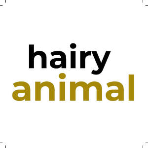

Trade Mark Journal No.2025/044 31 October 2025
UK00004281437 21 October 2025 (3,5)

- Class 3
- Hair oil; Hair oils; Hair fixing oil; Beard oil; Oil baths for hair care; Facial oil; Shaving oil; Cuticle oil; Oils for hair conditioning; Hair shampoo; Hair lotion; Combing oil; Hair wax; Hair liquids; Hair lotions; Hair spray; Hair moisturizers; Hair liquid; Hair dye; Body oil; Hair shampoos; Body oil spray; Hair conditioner; Hair pomades; Hair gel; Hair emollients; Massage oil; Hair cosmetics; Hair serums; Dyes for the hair; Hair dyes; Hair moisturisers; Hair balm; Hair styling lotions; Hair sprays; Hair cream; Baby hair conditioner; Bath oil; Hair lacquer; Hair balsam; Cosmetic preparations for the hair and scalp; Baby oil; Shampoos for human hair; Suntanning oil [cosmetics]; Hair lighteners; Wax treatments for the hair; Body oil [for cosmetic use]; Hair styling spray; Colouring lotions for the hair; Hair powder; Hair balms; Hair nourishers; Hair styling waxes; Hair creams; Hair styling gel; Hair conditioners; Horse oil cream for skin care; Hair mousse; Hair colorants; Cleansing oil; Hair texturizers; Hair masks; Hair relaxers; Oils for the skin; Lavender oil for cosmetic use; Hair rinses; Hair mascara; Styling sprays for the hair; Hair colourants; Hair gels; Hair and body wash; Shaving oils; Hair bleach; Rosemary oil for cosmetic use; Jasmine oil; Hair lacquers; Hair bleaches; Hair glazes; Tints for the hair; Cuticle oils; Rose oil; Facial oils; Eucalyptus oil for cosmetic use; Moustache wax; Wax (Moustache -); Face oils; Mustache wax; Lotions for beards.
- Class 5
- Medicated hair lotions; Vitamins and vitamin preparations; Prenatal vitamins; Gummy vitamins; Vitamin supplements; Vitamin and mineral supplements; Dietary supplements consisting of vitamins; Vitamins for animals; Preparations of vitamins; Liquid vitamin supplements; Vitamin and mineral food supplements; Vitamin supplements for animals; Vitamins for pets; Vitamin and mineral supplements for pets; Multivitamins; Preparations for supplementing the body with essential vitamins and microelements; Vitamin drinks; Mineral nutritional supplements; Calcium supplements; Health food supplements made principally of vitamins; Anti-oxidant supplements; Vitamin tablets; Anti-oxidant food supplements; Vitamin supplements for use in renal dialysis; Vitamin and mineral preparations; Nutritional supplements; Protein supplements; Vitamin preparations in the nature of food supplements; Vitamin supplement patches; Liquid nutritional supplements; Antioxidant pills; Lecithin dietary supplements; Probiotic supplements; Mineral dietary supplements; Vitamin preparations; Protein dietary supplements; Folic acid dietary supplements; Zinc dietary supplements; Chlorella dietary supplements; Vitamin drops; Health-aid foods supplements containing ginseng; Mineral dietary supplements for animals; Dietary and nutritional supplements; Mineral dietary supplements for humans; Flaxseed dietary supplements; Whey protein dietary supplements; Liquid dietary supplements; Protein powder dietary supplements; Dietary supplements; Colostrum supplements; Flaxseed oil dietary supplements; Prebiotic supplements; Antioxidants; Multi-vitamin preparations; Protein supplements for animals; Herbal supplements; Enzyme dietary supplements; Effervescent vitamin tablets; Soy protein dietary supplements; Medicated food supplements; Multivitamin preparations; Food supplements; Liquid herbal supplements; Linseed dietary supplements; Yeast dietary supplements; Dietary food supplements; Calcium tablets as a food supplement; Nutraceuticals for use as a dietary supplement; Propolis dietary supplements; Acai powder dietary supplements; Wheat dietary supplements; Glucose dietary supplements; Albumin dietary supplements; Food supplements consisting of amino acids; Dietary supplements for infants; Health food supplements made principally of minerals; Vitamin fortified beverages for medical purposes; Dietary supplements for animals; Homeopathic supplements; Anti-oxidants obtained from herbal sources; Linseed oil dietary supplements; Dietary supplements for humans; Nutritional supplements consisting primarily of calcium; Pollen dietary supplements; Vitamin A preparations; Medicated supplements for foodstuffs for animals; Casein dietary supplements; Dietary supplements for controlling cholesterol; Vitamin C preparations; Alginate dietary supplements; Nutritional supplements consisting primarily of magnesium; Mixed vitamin preparations; Antibiotic food supplements for animals; Nutritional supplement energy bars; Diet capsules; Dietary supplements and dietetic preparations containing CBD oil; Health-aid foods supplement containing red ginseng; Wheat germ dietary supplements; Nutritional supplements consisting primarily of zinc; Vitamin D preparations; Nutritional supplements consisting of fungal extracts; Anti-oxidants for dietary use; Dietary supplements for pets; Vitamin B preparations; Dietary supplement drinks; Soy isoflavone dietary supplements; Nutritional supplements for veterinary use; Zinc supplement lozenges; Nutritional supplements for livestock feed.
THE LOOK IT LTD